형제간의 전쟁 - 1810년 네덜란드 합병
게시: 2018-06-14T06:30:00+09:00
1809년 바그람 전투에서 오스트리아를 격파한 나폴레옹은 오스트리아로부터 추가적인 영토를 뜯어냅니다. 그러나 이때가 나폴레옹 제국이 최대 영토를 자랑하던 때는 아니었습니다. 그 순간은 1810년에 오는데, 이때 나폴레옹이 우디노의 군단을 동원하여 추가로 타국을 정복했고 그 땅을 아예 프랑스 영토로 편입했거든요. 1810년은 비교적 조용한 한 해로 알려졌는데, 그런 한가한 시기에 나폴레옹의 먹이가 된 나라는 어디였을까요 ? 바로 네덜란드였습니다. 그리고 나폴레옹이 침공할 때 당시 네덜란드의 국왕은 용감하게도 병사들에게 발포 명령을 내리며 저항을 지시했는데, 그 국왕은 바로 나폴레옹이 아끼는 동생 루이 보나파르트였습니다. 대체 어쩌다 이렇게 되었을까요 ? 이 복잡한 이야기를 듣고 나시면 왜 네덜란드 축구팀의 상징이 오렌지색인지도 아실 수 있습니다.
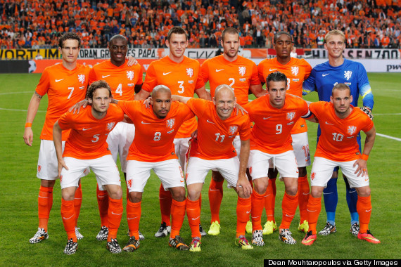
(네이버를 뒤져보아도 저 유니폼 색깔과 오렌지공 윌리엄 이야기는 많이 나오지만 왜 애초에 네덜란드 귀족이 오렌지라는 이름을 가지게 되었는지는 잘 안나오더군요. 아무튼 이번 월드컵에서는 오렌지 군단이 설 자리는 없습니다. 아쉽게도요.)
유아기에 사망한 형제들을 빼면, 나폴레옹 보나파르트에게는 본인 제외하고 모두 7명의 남매가 있었습니다. 맨 위가 조제프 (Joseph), 둘째가 나폴레옹, 세째가 유능했던 루시앙(Lucien), 그 다음이 존재감 없던 엘리자(Elisa), 다섯번째가 오늘의 주인공 루이(Louis), 그 다음이 아름다운 폴린(Pauline), 탐욕스러운 캐롤린(Caroline), 그리고 막내 제롬(Jérôme)입니다. 나폴레옹은 코르시카 독립 운동에서 어설프게 정치판에 뛰어들었다가 야반도주하여 프랑스에 정착한 이후, 가족들을 먹여살려야 한다는 가부장적 중압감에 시달리는 전형적인 이탈리아 사람이었습니다. 그런 그는 툴롱 포위전 이후 신분이 상승하자, 당연히 자신의 식구들에게 경제적 기반을 닦아주기 바빴고, 특히 남자 형제들에게는 출세길을 열어주기 위해 무던히 애를 썼습니다. 대표적인 예가 바로 루이와 제롬이었지요. 제롬은 워낙 어렸으므로 일단 학교에 보내 교육을 받게 했지만, 루이 같은 경우는 당시 국방장관이던 카르노(Carnot)에게 청탁을 넣어 포병 부대에 장교로 임관을 시켰습니다. 루이는 나폴레옹의 제1차 이탈리아 원정은 물론, 잘 알려지지는 않았지만 이집트 원정까지도 따라가 위대한 형의 부관 노릇을 했습니다. 물론 애지중지하는 동생이 위험에 노출되지 않도록 배려했던 형 덕분에 전공을 세울 기회는 없었습니다만, 형이 프랑스 제1통령이 되자, 그 여세를 몰아 25살이라는 새파란 나이에 장군까지 초고속으로 승진하는 낙하산을 타게 됩니다. 마치 요즘 우리나라 재벌 2세, 3세와도 같은 행보였지요. 다만 우리나라 재벌 2,3세와는 달리, 그는 스스로 '너무 이른 나이에 너무 높은 계급에 부당하게 올랐다' 라고 스스로 생각하고 다소 주눅이 들어 있었다고 합니다.
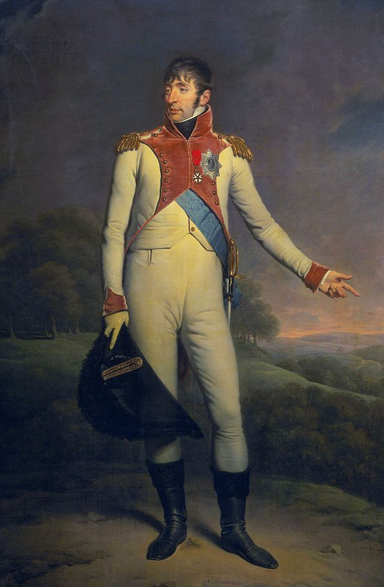
(루이 보나파르트입니다. 둘째 형보다는 다소 못 생겼습니다.)
하지만 그가 주눅이 든 이유는 또 있었습니다. 장군으로 승진하기 1년 전인 1802년, 하늘 같은 둘째형인 나폴레옹으로부터 청천벽력 같은 명령을 받았기 때문이었습니다. 바로 나폴레옹의 의붓딸이자 형수 조세핀의 딸, 즉 촌수로 치면 바로 자신의 의붓 조카딸인 오르탕스(Hortense de Beauharnais)와 결혼하라는 것이었지요. 나폴레옹은 어떻게든 보나파르트 가문의 후손을 얻어야 했고, 조세핀은 어떻게든 자식을 낳지 못하는 자신의 입지를 굳힐 필요가 있었기 때문에 이런 정략 결혼을 결정한 것이지요. 그러나 루이는 다른 보나파르트 가문의 사람들처럼 보아르네 가문 사람들을 끔찍하게 싫어했고, 오르탕스도 늘상 우울하고 주눅이 들어보이고 루이를 혐오하고 있었습니다. 게다가, 오르탕스는 당시 다른 남자와 열애 중이었지요. 그러나 지중해성 가부장인 나폴레옹은 눈도 꿈쩍 하지 않았습니다. 이 불행한 결혼은 이 두 젊은 남녀에게는 그야말로 실패작이었습니다만, 나폴레옹과 조세핀에게는 대성공작이었습니다. 아이를 둘이나, 그것도 둘다 아들로 낳았기 때문입니다. 특히 첫 아이의 탄생에 대해 나폴레옹은 너무나 기뻐하며 그 아이에게 나폴레옹(Napoléon Louis Charles Bonaparte)이라는 이름을 선사했습니다. 실은 둘째에게도 Napoléon Louis Bonaparte라는 나폴레옹의 이름을 선사했고, 훨씬 나중인 1808년에 태어난 세째에 대해서도 같은 이름 Louis-Napoléon Bonaparte을 주었습니다.
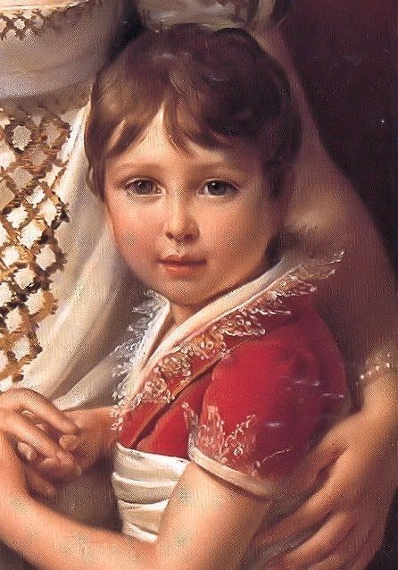
(첫째 아들인 나폴레옹 루이 샤를입니다. 나폴레옹이 하도 이 아이를 각별히 여겨, 항간에는 저 아이가 나폴레옹과 오르탕스의 근친상간으로 나온 아이라는 악의적인 소문이 나돌 정도였습니다. 비록 나폴레옹이 여자 문제가 난잡하기는 했지만 그건 터무니없는 날조라는 것이 대체적인 역사가들의 의견입니다.)
그러나 첫째는 5살이 되기 전에 병으로 죽고 말아, 나폴레옹은 물론 전체 보나파르트 가문에게 큰 슬픔을 주었습니다. 둘째인 루이 나폴레옹도 나폴레옹 몰락 이후 젊은 나이에 요절했습니다. 그는 동생과 함께 오스트리아의 압제에 저항하는 북부 이탈리아의 지하 조직 카르보나리(Carbonari) 활동을 하다 경찰에 쫓기는 몸이 되었는데, 그 와중에 병에 걸려 동생의 팔에 안긴 채 27살의 나이로 죽은 것입니다. 루이와 오르탕스가 잠깐 화해한 1807년 프랑스 툴루즈에서 잉태된 세째는 이탈리아 경찰의 추적을 뿌리치고 어머니 오르탕스와 함께 탈출에 성공하는데, 이 청년이 훗날 나폴레옹 3세가 됩니다. 그 이야기는 훨씬 훗날 다룰 기회가 있기를 바랍니다.
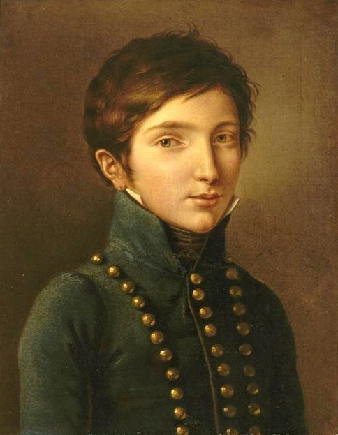
(둘째 루이-나폴레옹입니다. 어릴 때 그려진 그림 밖에 없네요. 6살의 나이에 1주일 뿐이지만 네덜란드의 왕을 역임한 소년입니다.)
아무튼 이렇게 불행한 결혼에 우울해하던 루이에게 형 나폴레옹은 1806년, 뜻밖의 제안을 하게 됩니다. 네덜란드의 왕으로 즉위하라는 것이었지요. 루이가 네덜란드 왕으로 즉위하게 되기까지는 무척 복잡한 정치외교적인 역사와 사건이 얽혀 있었습니다.
네덜란드는 중세 이후 왕가들의 결혼에 따라 합스부르크 가문에게 통치권이 넘어갔다가, 네덜란드 독립 전쟁의 결과로 1581년에 7개 지방의 연합체인 네덜란드 공화국으로 독립한 부유한 동네였습니다. 네덜란드 공화국의 수장을 stadtholder, 네덜란드어로는 stadhouder(스타트하우더, stadt는 영어로 city, town 등을 뜻하는 단어)라고 하는데, 이는 부관이나 중위를 뜻하는 불어 단어 및 거기서 파생된 동일 스펠링의 영어 단어 lieutenant(루테넌트, 불어로는 류뜨낭)와 동일한 뜻으로 '왕이 없는 동안 왕을 대리하는 직책'을 뜻하는 것이었습니다. 원래 네덜란드 저지대에는 합스부르크 왕들이 직접 거주하지 않았으므로, 그 지방의 귀족을 대리인으로 지정해 세금 징수 등의 업무를 보게 했는데, 그 명칭이 독립 이후에도 이어진 것이지요. 네덜란드 독립 전쟁을 지휘한 것도 네덜란드의 스타트하우더인 오라녜-나사우(Oranje-Nassau) 가문의 빌렘( (Willem van Oranje, 영어로는 William of Orange) 1세였습니다. 이 직위는 세습되는 것이었으므로, 외국에서는 이 스타트하우더 관직을 왕이나 뭐 그에 준하는 것인 모양이라고 오해하는 경우가 많았습니다. 결과적으로 나폴레옹 패망 이후 실제로 이 가문의 수장을 왕으로 하는 네덜란드 왕국이 성립되었으니, 그 오해가 꼭 틀린 것은 아니었지요.
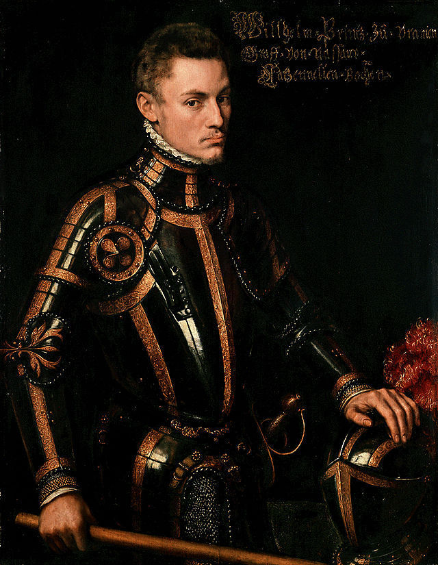
(이 씩씩하게 생긴 양반이 네덜란드 독립 전쟁의 지도자 나사우의 빌렘 1세입니다.)
참고로, 이 오라녜-나사우는 원래 네덜란드와는 상관없는 곳입니다. 오라녜(네덜란드어로 오라녜이고, 프랑스어로는 오랑쥐)는 프랑스 남부, 아비뇽(Avingon) 인근에 있는 곳이고, 나사우는 독일에 있는 지방입니다. 이 두 지방의 귀족들이 결혼 및 상속을 통해 합쳐진 것이지요. 네덜란드가 이 오라녜-나사우 가문과 연결된 것은 나사우의 엥겔베르트 2세(Engelbert II)가 합스부르크 가문에 의해 플랑드르의 스타트하우더로 임명되면서부터였습니다. 또, 이 오라녜-나사우 가문의 이름과 과일 오렌지와는 전혀 상관이 없었고, 이때까지만 해도 유럽에는 오렌지라는 과일이 잘 알려지지 않았습니다. 색깔도 주황색에 대해서는 그저 노란 빨강(yellow-red) 또는 샤프란(saffron) 색 정도로 불려질 뿐, 오렌지 색이라는 색 이름은 존재하지 않았습니다. 원래 오렌지는 중국 남부의 감귤류가 조상인 과일이라서, 유럽에는 전혀 알려지지 않은 식물이었습니다. 그러다 동남아와 인도를 거쳐 아랍 쪽에 전해졌지요. 유럽에까지 이 과일 나무가 전해진 것은 15세기 후반부터였고, 유럽에 오렌지라는 것이 널리 알려진 것은 17세기 중반 경이었습니다. 이 과일의 이름이 오렌지로 정해진 것도 오랑쥐 또는 오라녜와는 전혀 무관한, 이 과일의 아랍 이름인 나랑쥐 (naranj)에서 비롯된 것입니다. 처음에는 자기 가문의 영지 이름과 과일 이름이 비슷하여 어리둥절했을 오라녜-나사우 가문에서 이 오렌지 색을 자기 가문의 상징으로 받아들인 것은 네덜란드 독립 전쟁 즈음 해서였다고 합니다. 즉, 네덜란드 국가대표축구팀이 오렌지 색 유니폼을 입게 된 것은 순전히 우연한 일이었습니다. 참고로 프랑스 남부의 오랑쥐라는 지명은 과일과는 전혀 무관한, 고대 켈트족의 물의 신인 Araisio에서 변형된 것이라고 합니다.
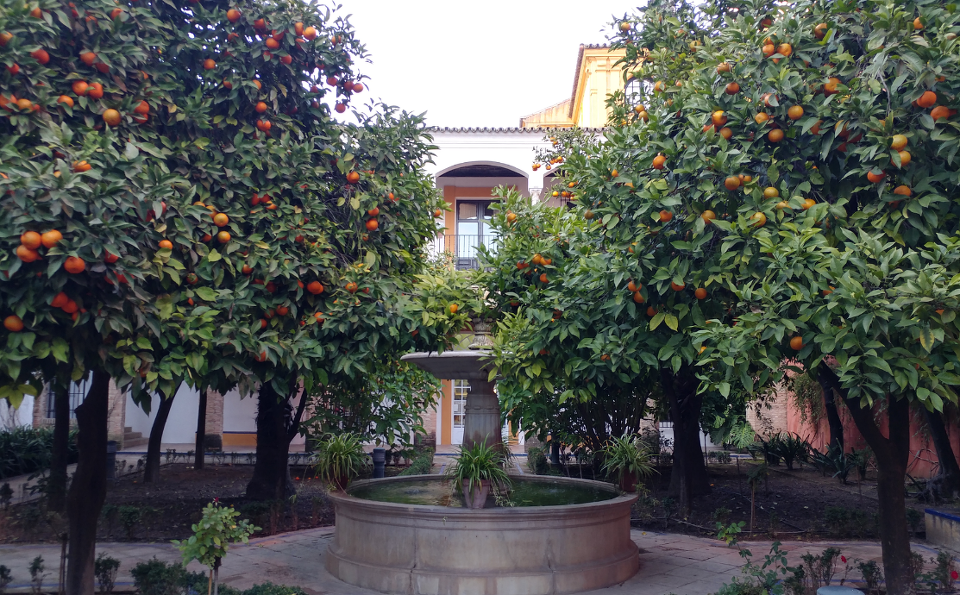
(이 와중에 서민들이나 한다는 직접 찍은 유럽 여행 사진 자랑... 스페인에는 가로수로 오렌지 나무가 많은데, 오렌지 향기를 좋아했던 아랍인들이 스페인을 정복했을 때 심은 것에서 유래했다고 합니다. 사진은 세비야에서 찍은 것입니다. 가봤던 스페인 도시 딱 하나에 다시 가보라고 한다면 저는 세비야를 택하겠습니다. 좋더라구요 !)
아무튼 그 오라녜 공을 수장으로 하던 네덜란드 공화국은 스페인과는 달리 발달된 상공업 덕분에 시민 계급의 성장과 계몽주의 확산이 매우 왕성했습니다. 덕분에 프랑스 대혁명 이전에 이미 오라녜 가문에 대해 무장 혁명이 일어날 정도였으나, 오라녜 가문과 친척이던 프로이센 왕의 군대가 이를 진압하는 등의 소동이 있었지요. 그러다 프랑스 대혁명이 일어나자, 자연스럽게 이 네덜란드 자체 혁명 세력은 프랑스 혁명군의 지원을 받아 오라녜 가문을 내쫓고 새로운 정부인 바타비아(Batavia) 공화국을 세웁니다. 그러나 프랑스 자신이 공안 위원회의 공포 정치나 부패한 총재 정부 등 혼란을 겪으면서 네덜란드의 혁명 정부도 많은 혼란과 내부 갈등, 거기에 힘세고 거친 이웃인 프랑스의 간섭에 시달리게 됩니다.
이런 와중에도 네덜란드의 독립성을 유지시켜 주었던 것은 네덜란드의 무력보다는 네덜란드의 은행가들이었습니다. 아시냐 지폐의 혼란 등 재정 붕괴로 고통을 겪던 프랑스 혁명 정부는 부유한 네덜란드에게 차관을 요구했고, 네덜란드에서는 특혜에 가까운 저이율로 차관을 제공함으로써 프랑스를 지원해주었던 것입니다. 그러나 나폴레옹이 쿠데타로 집권하면서 상황이 달라지게 됩니다. 일단 중2병 환자였던 나폴레옹은 민주 정권을 쿠데타로 뒤엎은 인간답게, '민주 공화국'이라는 네덜란드를 무척 고깝게 보고 있었습니다. 그런 상황에서 쿠데타로 집권한 뒤 당장 돈이 없어서 쩔쩔 매던 나폴레옹도 전임 총재들처럼 네덜란드 은행가들에게 대출을 요청했습니다. 문제는 그 태도와 조건이 마치 뭐 맡겨 놓은 돈을 인출하는 고객처럼 무이자 대출을 거만한 태도로 요구했다는 것이지요. 네덜란드 은행가들이 이 신용평가가 떨어지는 반란군 수괴에게 대출을 거부하자, 네덜란드의 독립은 이미 반쯤 날아간 것이었지요. 게다가 트라팔가 해전 이후 영국 침공의 꿈이 완전히 좌절되자 네덜란드에서는 당장 '영국 침공 망했으니 그거 한답시고 빌려간 불로뉴의 대형 보트 함대 돌려주세요'라고 눈치도 없고 시의부적절한 반환 요구를 하는 바람에, 나폴레옹의 심기를 크게 자극했습니다.
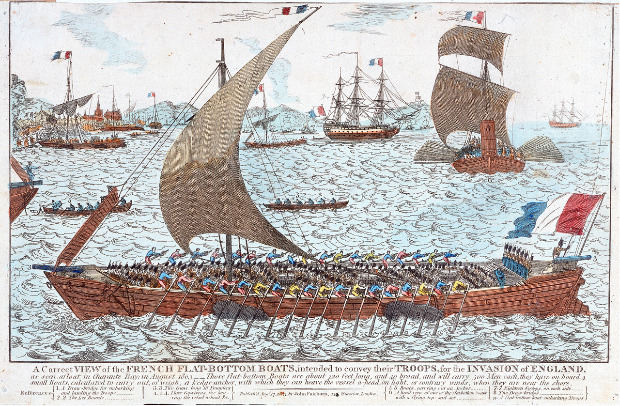
(나폴레옹이 불로뉴에 대규모로 집결시켰던 이 대형 평저선들은 알고 보면 네덜란드에서 빌려온 것들....)
게다가 네덜란드 공화국 내부에서도 갈등이 많았습니다. 가령 세금이 재산세 위주가 아니라 소비세 위주라서 서민들에게 불리했는데, 이를 바로 잡고 빈민들을 구제하자는 개혁 세력과 자본가들에게 유리한 기존 제도를 그대로 유지하자는 기득권 세력의 충돌이 있었습니다. 이런 내부 갈등 때문에 아무 것도 되는 것이 없자 원래 혁명을 지지했던 많은 네덜란드인들도 혁명에 염증을 느끼고 있었지요. 그런 상황에서, 나라 전체가 영국과의 교역으로 먹고 살던 네덜란드가 나폴레옹의 지엄하신 대륙 봉쇄령을 몰래 깨고 영국과 밀무역을 계속하자 나폴레옹은 네덜란드를 그냥 정리해야겠다고 마음을 먹게 됩니다. 그렇다고 수십년간 독립 전쟁을 벌이면서 합스부르크 가문의 손아귀로부터 기어코 독립을 쟁취했던 만만치 않은 성깔의 네덜란드를 프랑스의 일부로 병합할 수는 없다고 판단한 나폴레옹은, 네덜란드를 꼭두각시 왕이 다스리는 허수아비 왕국으로 만들기로 합니다. 그 적임자로 지명된 것이 루이였습니다. 이미 조제프는 나폴리 왕이었고, 그렇다고 보나파르트 가문 출신이 아닌, 사위일 뿐인 뮈라를 먼저 왕으로 앉힐 수도 없었으니까요. 어차피 나파륜 황제가 결정한 이상 다른 선택이란 존재하지 않는데다 내부 갈등에 지친 네덜란드도 반쯤 자포자기하는 마음으로 타협에 응합니다. 즉, 루이와 그의 후손이 자식을 남기지 못하고 죽는다고 하더라도 절대 프랑스 왕위와 합쳐지는 일이 없어야 한다든지, 네덜란드에는 징집제를 도입하지 않는다든지 하는 현실적인 조건으로 나폴레옹의 명에 따르게 됩니다.
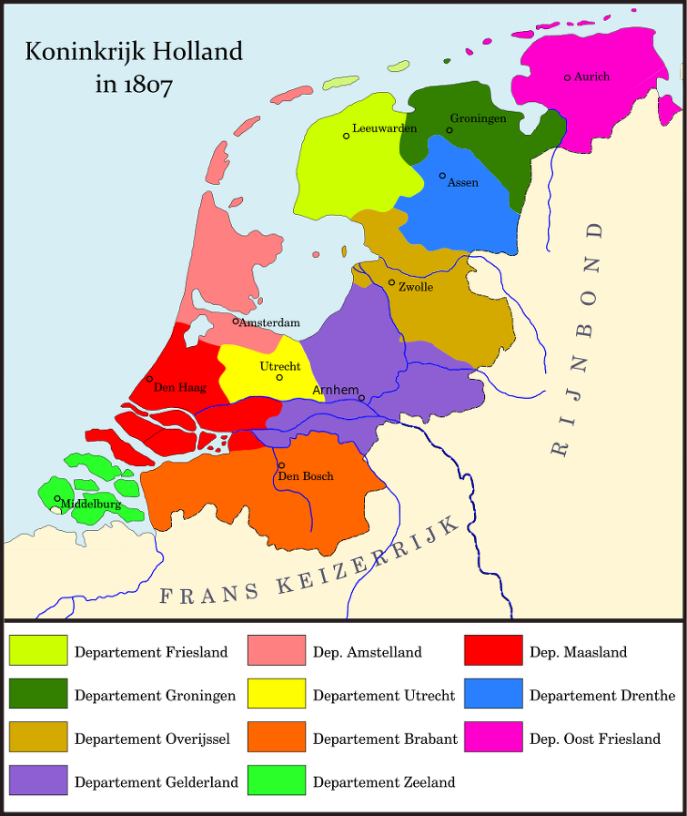
(1807년 루이 치하의 네덜란드 왕국의 모습입니다.)
하지만 루이는 네덜란드에 파견된 프랑스 총독 노릇을 바라던 형 나폴레옹의 기대와는 전혀 딴판으로 행동합니다. 루이는 1806년 6월 네덜란드 국왕으로 즉위하자마자, 프랑스식 이름인 루이(Louis)를 네덜란드식으로 로더베익(Lodewijk)으로 바꿉니다. 그리고 열심히 네덜란드어를 배웠습니다. 그리고 형이 붙여준 프랑스 출신 관료들에게도 모두 네덜란드어를 배우게 함은 물론, 프랑스 시민권을 포기하고 네덜란드인으로 거듭날 것을 요구했습니다. 심지어는 왕비인 오르탕스에게까지 프랑스 시민권을 버리도록 강요할 정도였습니다. 그의 이런 노력은 네덜란드 시민들에게 상당한 호감을 주었습니다. 게다가 1807년 라이덴(Leiden)에서 발생한 화약 화물선 폭발 사고와 1809년 홍수 상황에서, 루이는 네덜란드 시민들의 구호에 온 힘을 기울여 국민들의 큰 칭송을 받아 '선량왕 로더베익'이라는 명예로운 호칭을 얻을 정도였습니다.
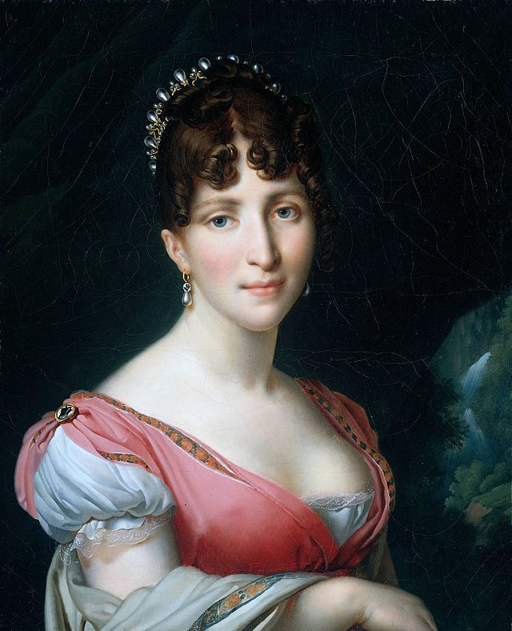
(오르탕스는 젊고 아름다운 왕비였습니다. 그녀는 어린 시절 아버지 보아르네와 이혼한 뒤 갈 곳이 없었던 어머니 조세핀을 따라 어머니의 고향인 카리브 해의 마르티니크에서 흑인 노예들의 춤과 노래를 보고 들으며 소울을 키웠기 때문에, 춤과 음악에 무척 재주가 있는 활기찬 아이였다고 합니다. 나폴레옹은 그녀의 그런 점을 높이 보았고, 나폴레옹의 사랑을 듬뿍 받았습니다. 히틀러처럼 나폴레옹도 아이들을 무척 좋아하는 편이었지요.)
왕비 오르탕스는 처음에는 네덜란드의 왕비가 되라는 지시에 정말 크게 반발하고 실망했다고 합니다. 그녀는 친구들과 어머니 조세핀이 있는 아름다운 파리를 떠나기 싫어했고, 또 끔찍하게 싫은 남편인 루이와 함께 가야한다는 것이 무엇보다 싫었던 것입니다. 그러나 막상 네덜란드에 도착해 보니, 시민들이 (이건 루이의 공이 컸는데) 왕비인 자신을 무척 좋아하고 환영하는 것을 보고 그녀도 조금씩 네덜란드에 대해 마음을 열게 되었습니다. 그러나 루이와의 관계는 역시 전혀 좋지 못하여, 이 부부는 될 수 있으면 서로를 피했고 어쩔 수 없이 같이 하는 식사에서도 서로 아무 말도 하지 않았다고 합니다.
루이에 대해 불만을 가진 사람은 오르탕스 뿐만이 아니었습니다. 루이 왕의 그런 통치는 결코 나폴레옹이 바라는 바가 아니었습니다. 나폴레옹은 루이에게 그동안 프랑스가 네덜란드 은행가에서 꿔온 대출금을 1/3 수준으로 일괄 탕감하도록 조치하라고 시켰으나, 독립국가 네덜란드 왕국의 수장으로서 네덜란드 시민들의 이익을 지켜야 했던 루이는 그런 터무니 없는 형의 요구를 단호하게 거절했습니다. 나폴레옹으로서는 정말 어이가 없었을 것입니다. 게다가 네덜란드의 바타비아 공화국을 폐지시켰던 가장 큰 이유인 대륙 봉쇄령의 엄격한 시행이었는데, 사랑하는 네덜란드 국민들의 경제적 이익을 최우선으로 두었던 루이는 그 단속에 대해 열의가 없었습니다.
이런 상황에서 영국이 사고를 칩니다. 1809년 영국이 앤트워프(Antwerp, 네덜란드어로는 안트베르펜 Antwerpen)과 플러싱(Flushing, 네덜란드어로는 블리싱헨 Vlissingen)을 침공한 것입니다. 이 대규모 상륙 작전에 동원된 병력은 총 4만의 대군이었습니다. 당연히 루이는 이 공세를 막아내지 못하고 어쩔 줄 몰라했습니다. 이렇게 되자 루이의 독립 왕국 네덜란드의 체면이 말이 아니게 되었습니다. 이런 상황을 해결한 것은 당시 오스트리아와의 바그람(Wagram) 전투에서 나폴레옹 눈 밖에 나서 프랑스에 와 있던 베르나도트였습니다. 그는 고작 2만명 규모의 병력을 끌고 가서 네덜란드에 상륙한 뒤 네덜란드 저지대 특유의 풍토병으로 끙끙 앓고 있던 영국군을 쓱쓱 밀어내버린 것입니다.
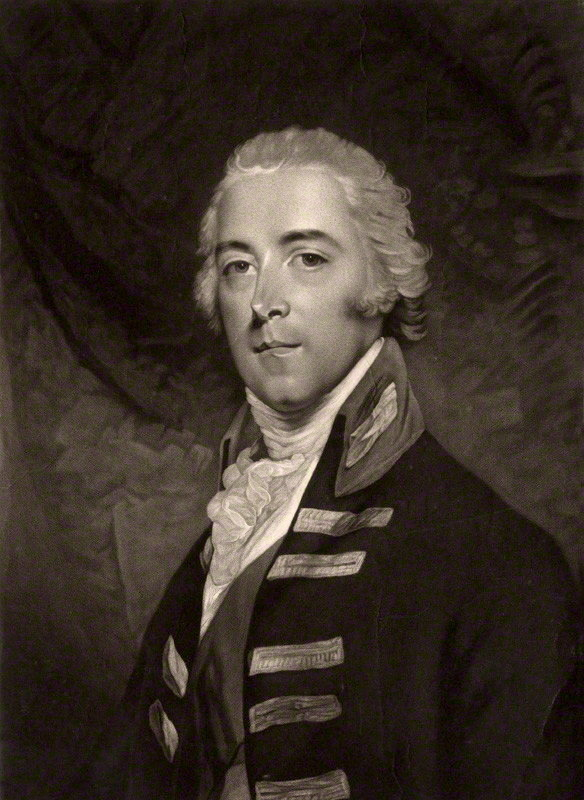
(이 안트워프/플러싱 침공을 영국에서는 왈체런 Walcheren 작전이라고 부릅니다. 그 작전을 지휘했던 캐텀 백작, John Pitt, 2nd Earl of Chatham 입니다.)
이 일을 계기로 나폴레옹은 말 안 듣는 배은망덕한 동생 루이에게 '자기 왕국을 지키지 못하는 무능한 왕'이라며 차라리 퇴위를 명했습니다. 루이는 그를 거부했지만 사실 오래 버틸 수가 없었습니다. 1810년 여름, 나폴레옹은 우디노를 앞세워 동생의 왕국을 침공할 태세를 취했고, 루이는 감히 무서운 형에 맞서 자신의 네덜란드군에게 저항 명령을 내렸습니다. 그러나 네덜란드 사람들이 아무리 루이를 좋아했다고 해도 가망없는 싸움에 헛되이 목숨을 버리기엔 너무 상대가 되지 않았습니다. 결국 자신의 왕위가 보잘 것 없는 허울 뿐이라는 것을 깨달은 루이는 7월 1일 왕위를 아들 나폴레옹 루이에게 넘기고 도주했습니다. 우디노의 부대는 7월 4일 네덜란드를 무혈 침공했고, 당시 6살이던 어린 루이 2세를 잘 타일러 큰 아버지 댁, 즉 나폴레옹의 튈르리 궁으로 데려갔습니다. 이로써, 루이의 네덜란드 왕국은 불과 4년 만에 사라지고, 7월 9일 네덜란드는 프랑스의 일부로 병합되어 버립니다.
왕위를 잃은 루이의 행방은 처음에는 오리무중이었습니다. 우디노를 비롯한 나폴레옹의 부하들은 루이가 대체 어디로 도망쳤는지 알지 못했고, 동생의 안위가 살짝 걱정되었던 나폴레옹이 행방불명된 루이를 찾아 '잘 타일러 파리로 보내라'고 각지에 편지를 써보낼 지경이었습니다. 그러다 루이가 뜻 밖에도 오스트리아로 도주하여 망명한 것이 알려져 나폴레옹의 입장을 난처하게 만들었습니다. 장인어른 댁으로 도망친 것이니까요. 아마 무시무시한 사위를 상대하기 껄끄러웠던 오스트리아 황제 프란츠도 이 망명객이 무척 달갑지 않았을 것입니다만, 차마 파리로 압송하지는 못했습니다. 나폴레옹도 차마 장인에게 신병 인도를 요청하지는 못했습니다.
루이나 프란츠, 나폴레옹보다 더 곤란해진 것은 당연히 네덜란드 시민들이었습니다. 원래 나폴레옹이 네덜란드에 자신의 동생을 왕으로 앉힐 때의 조건은 절대 네덜란드를 프랑스에 통합하지 않겠다는 것이었습니다. 과연 루이가 쫓겨난 지금 네덜란드의 운명은 어떻게 될 것인지에 대해 네덜란드 시민들은 전전긍긍했습니다. 그런데 나폴레옹은 이미 마음을 정한 상태였습니다. 그는 프랑스에서 시작된 하천이 네덜란드의 주요 항구 도시로 흘러들어간다는 것 자체가 프랑스와 네덜란드는 자연적으로 하나의 공동체라는 것이라는 해괴한 논리로 네덜란드를 프랑스의 일부로 통합해버렸습니다.
특히 이건 네덜란드의 상징적 독립성 못지 않게 네덜란드 시민들에게 더 심각한 문제와 직결된 것이었습니다. 바로 공포의 징집제였지요. 네덜란드에서는 징집제를 적용하지 않겠다는 조건의 나폴레옹의 동생을 국왕으로 받아들였던 것인데, 이젠 아예 네덜란드가 프랑스의 일부가 되어 버렸으니 징집제는 피할 수 없게 된 것입니다. 결국 1811년부터 네덜란드에도 징집제가 적용되었고, 20세 이상의 청년들이 프랑스군에 끌려가게 되었습니다. 결국 1812년 러시아로 향했던 나폴레옹의 군대 속에는 약 1만5천의 네덜란드 청년들이 포함되어 있었습니다. 약소국의 설움이었지요.
그러나 최소한 1810년 네덜란드를 프랑스의 일부로 합병한다는 발표가 났을 때 네덜란드인들은 크게 동요하며 저항하지는 않았습니다. 당시는 주요 전쟁이 나폴레옹의 승리로 다 끝난 뒤인 평화 시기였고, 러시아와의 비극적 전쟁이 예고된 바도 없었거든요. 오히려 네덜란드가 프랑스의 일부로 합병되면서 네덜란드 경제를 괴롭히던 불확실성이 제거된데다 프랑스라는 큰 시장에 대한 관세도 사라진 셈이 되어, 많은 네덜란드 상인들은 합병 조치에 씁쓸해하면서도 자신들의 장사에는 도움이 된다는 것을 인정했다고 합니다.
오스트리아로 망명한 루이는 어떻게 되었을까요 ? 망명 이후 루이는 오스트리아에서 조용한 망명 생활을 하며 문필 활동에 전념합니다. 나폴레옹 퇴위 이후 네덜란드가 결국 오라녜 가문의 빌렘 1세를 왕으로 하는 왕국으로 독립하자, 그는 나름 깊은 애정을 가지고 있던 네덜란드를 방문하게 해달라고 빌렘 1세에게 여러번 요청했지만 계속 거부되었습니다. 그러나 그 다음 왕인 빌렘 2세가 1840년 그의 방문을 '익명으로 여행할 것'을 조건으로 허락합니다. 그가 이렇게 익명으로 네덜란드의 어느 호텔에 묵었을 때, 그래도 그를 알아본 시민들이 그 호텔 방 창문 아래 모여 들었습니다. 거리에서 웅성이는 소리를 듣고 창문으로 나온 그를 맞이한 것은 잠깐이지만 네덜란드를 진심으로 대하며 다스려준 전왕에 대한 네덜란드 시민들의 환호화 갈채였습니다. 그는 이 사건에서 깊은 감동을 받았다고 합니다. 그는 이후, 이탈리아 독립 운동을 벌이던 아들들과는 달리 별다른 정치 활동을 벌이지 않고 조용히 살다가 1846년 평화롭게 죽었습니다.
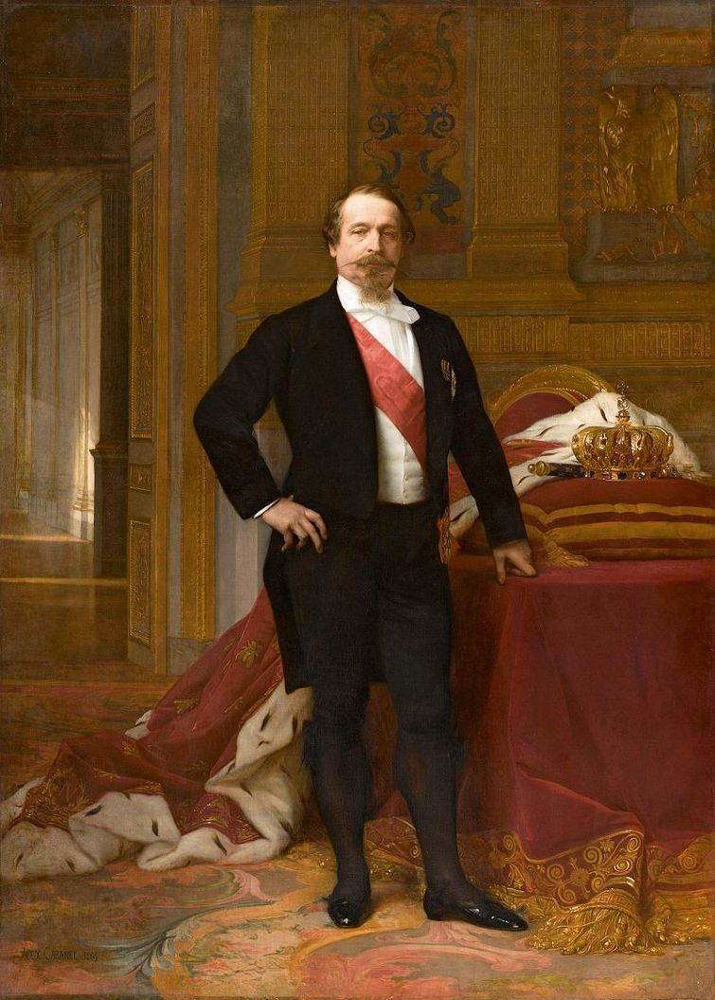
(하지만 루이가 이 세상에 남긴 가장 큰 결과는 바로 이 남자입니다... 좋은 의미로든 나쁜 의미로든요.)
Source : The Life of Napoleon Bonaparte by William M. Sloane
http://www.erfskipterpdoarpen.nl/documents/Engels/SoldiersNapoleon/SoldiersNapoleonIntroduction.htm
https://en.wikipedia.org/wiki/Louis_Bonaparte
https://en.wikipedia.org/wiki/Hortense_de_Beauharnais
https://en.wikipedia.org/wiki/William_the_Silent